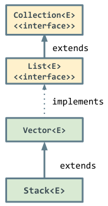
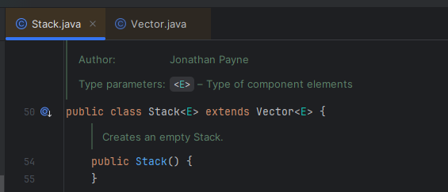
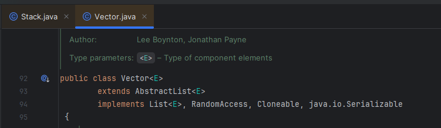
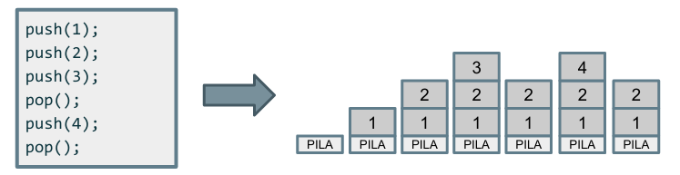

 
donde Vector:

Una pila es una estructura LIFO (Last In, First Out): "último en entrar, primero en salir". Esto significa que el último elemento que se inserta en la pila es el primer elemento que se elimina de la pila.
Tiene las siguientes operaciones principales:
- push (empujar) → inserta un nuevo elemento a la pila.
- pop (sacar) → elimina el último elemento insertado.
- peek() → devuelve el elemento superior sin eliminarlo.
- isEmpty() → indica si la pila está vacía.

Vale... ¿y en Java?
import java.util.Stack;
public class EjemploStack {
public static void main(String[] args) {
Stack<Integer> pila = new Stack<>();
pila.push(10);
pila.push(20);
pila.push(30);
System.out.println(pila.peek()); // 30 (tope de la pila)
System.out.println(pila.pop()); // 30 (último en entrar, primero en salir)
System.out.println(pila.peek()); // 20 (el nuevo tope de la pila)
}
}
Uso de pilas
- Las pilas son útiles en situaciones en las que se necesitan realizar operaciones en un orden específico, como en la evaluación de expresiones aritméticas (por ejemplo, primero se multiplica y luego se suma). Las calculadoras y compiladores usan pilas para evaluar expresiones matemáticas sin paréntesis:
Por ejemplo, para evaluar (3+4)*2, el compilador lo traducirá a 3 4 + 2 * (notación postfija, donde el operador aparece después de los operandos), lo almacenará en un vector y usará una pila de la siguiente manera para resolverlo:
1. Insertamos 3 y 4 en la pila. Pila actual: [3, 4]
2. Encontramos +, sacamos 3 y 4, sumamos con resultado 7, y lo metemos de nuevo en la pila. Pila actual: [7]
3. Insertamos 2. Pila actual: [7, 2]
4. Encontramos *, sacamos 7 y 2, multiplicamos con resultado 14. Pila final: [14]
import java.util.Stack;
public class EvaluacionOperadores {
public static int evaluar(String expresion) {
Stack<Integer> pila = new Stack<>();
for (String token : expresion.split(" ")) {
if (token.matches("\\d+")) { // si es un número, se apila
pila.push(Integer.parseInt(token));
} else { // si es un operador, sacamos dos valores y operamos
int b = pila.pop();
int a = pila.pop();
switch (token) {
case "+": pila.push(a + b); break;
case "-": pila.push(a - b); break;
case "*": pila.push(a * b); break;
case "/": pila.push(a / b); break;
}
}
}
return pila.pop(); // el resultado final está en lo más alto de la pila
}
public static void main(String[] args) {
String expresion = "3 4 + 2 *"; // representa (3 + 4) * 2 en notación postfija
System.out.println(evaluar(expresion)); // 14
}
}
- Otro uso común es la implementación de "Deshacer" y "Rehacer" para gestionar el historial de acciones en editores de texto.
1. Cada vez que el usuario escribe algo, se guarda en una pila.
2. Si el usuario presiona "Deshacer", se saca el último elemento (pop()).
3. Si el usuario quiere "Rehacer", se almacena en otra pila y se restaura (push()).
import java.util.Stack;
public class UndoRedo {
public static void main(String[] args) {
Stack<String> acciones = new Stack<>();
acciones.push("Escribir 'Hola'");
acciones.push("Borrar 'Hola'");
acciones.push("Escribir 'Mundo'");
System.out.println("Última acción: " + acciones.pop()); // "Escribir 'Mundo'"
}
}
- También se utilizan en la implementación de algoritmos recursivos y en la gestión de llamadas a funciones en una pila de llamadas, ambas vistas en el Tema 4.